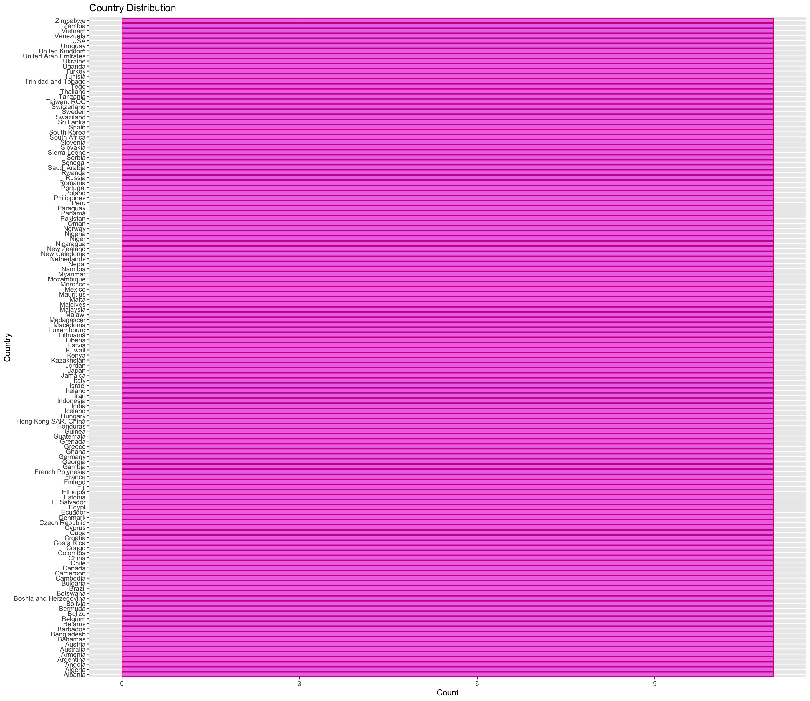
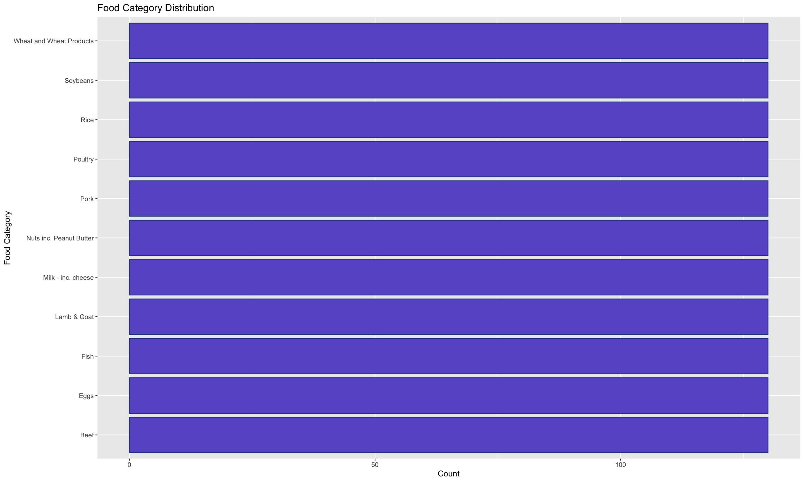
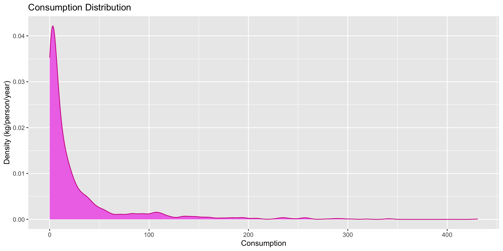
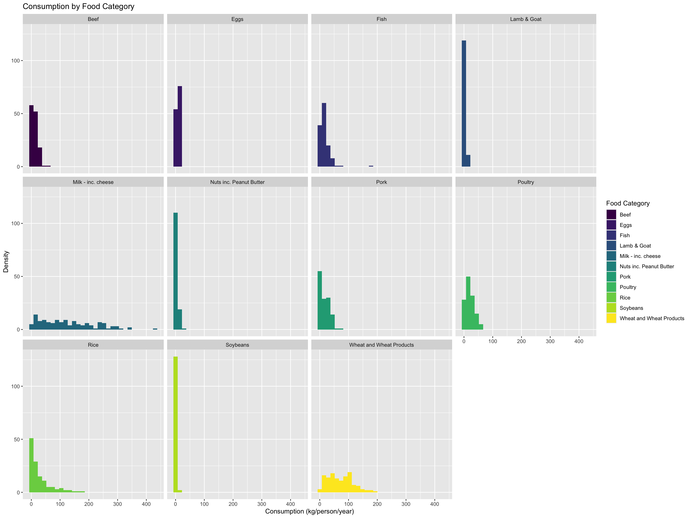
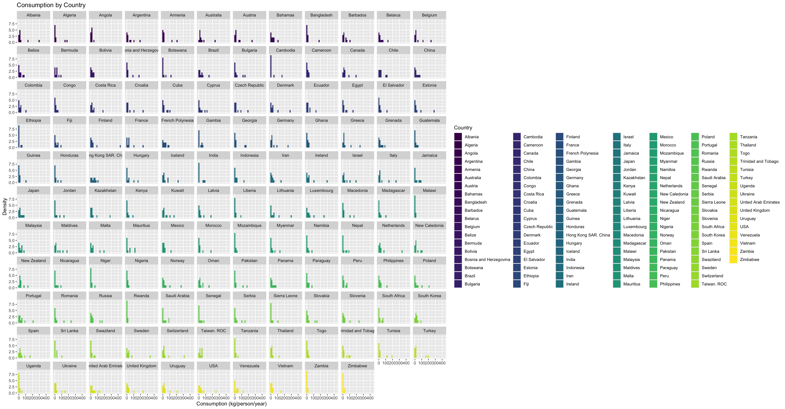
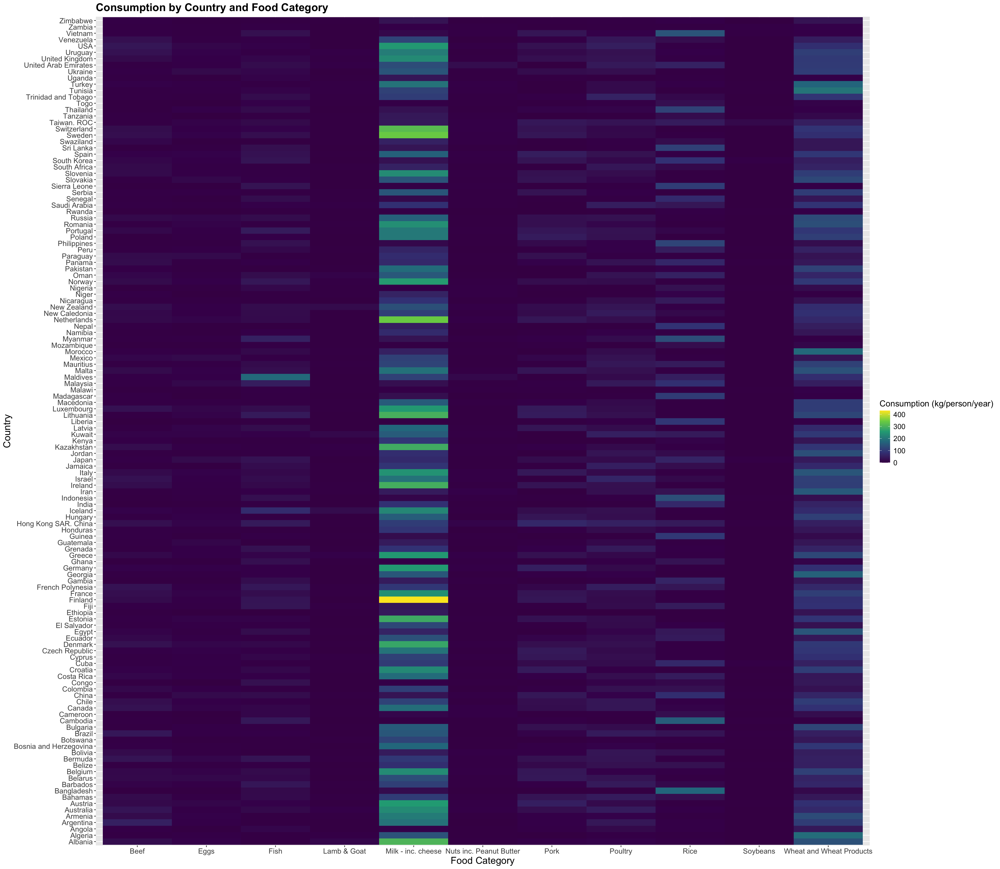

Exam 1
Load Packages
Get Data
Understand Data
[1] 1430 4spc_tbl_ [1,430 × 4] (S3: spec_tbl_df/tbl_df/tbl/data.frame)
$ country : chr [1:1430] "Argentina" "Argentina" "Argentina" "Argentina" ...
$ food_category: chr [1:1430] "Pork" "Poultry" "Beef" "Lamb & Goat" ...
$ consumption : num [1:1430] 10.51 38.66 55.48 1.56 4.36 ...
$ co2_emmission: num [1:1430] 37.2 41.53 1712 54.63 6.96 ...
- attr(*, "spec")=
.. cols(
.. country = col_character(),
.. food_category = col_character(),
.. consumption = col_double(),
.. co2_emmission = col_double()
.. )
- attr(*, "problems")=<externalptr> # A tibble: 6 × 4
country food_category consumption co2_emmission
<chr> <chr> <dbl> <dbl>
1 Argentina Pork 10.5 37.2
2 Argentina Poultry 38.7 41.5
3 Argentina Beef 55.5 1712
4 Argentina Lamb & Goat 1.56 54.6
5 Argentina Fish 4.36 6.96
6 Argentina Eggs 11.4 10.5 Observations
- The units of observation are individual categories of food within separate countries.
- There are 11 food categories.
- There are 130 countries.
Understand
Grand Research Question What does the consumption of each food category in each country look like? - This question involves 3 variables (one numerical, two categorical).
Country
Code

- Each country has a count of 11 because there are 11 food categories.
Food Category
Code

- Since there are 130 countries, each category of food has a count of 130.
Consumption
Code

- Consumption tends to be around 0 to 50 kg/person/year, but some observations get to as high as 450 kg/person/year. It is hard to say much without breaking it down by country, food category, or both.
Consumption + Category
Code

- It appears that the soybean category is on the lower end of consumption, with many observations close to or equaling zero.
- The milk category has the largest range, reaching all the way to around 450 kg/person/year. Wheat/wheat products and rice also have a relatively wide range, reaching a consumption of about 200. Fish has an outlier near 200 as well.
- Most of the categories seem to stay in the range of about 0 to 50 kg/person/year.
Consumption + Country
Code

- All countries are right-skewed in their consumption, but some have lower peaks and a longer range than others, such as the USA, Israel, Slovenia, and others. Overall, most observations across countries tend to be on the lower end of consumption.
Answering Grand RQ
Code
ggplot(fc, aes(x = food_category, y = country, fill = consumption)) +
geom_tile() +
scale_fill_viridis_c() +
labs(x = "Food Category", y = "Country", fill = "Consumption (kg/person/year)", title = "Consumption by Country and Food Category") +
theme(
plot.title = element_text(size = 18, face = "bold"),
axis.title = element_text(size = 16),
axis.text = element_text(size = 12),
legend.title = element_text(size = 14),
legend.text = element_text(size = 12)
)
- There are clear trends that are consistent in most of the countries shown. Milk (including cheese) products are consumed the most overall, with most countries reaching at least 200 kg/person/year and some even higher. Finland notably uses more than 400 kg/person/year.
- The second most popular food category is wheat and wheat products. They seem to range between 100 and 200 kg/person/year. Tunisia seems to use this category the most, at about 200 kg/person/year.
- Wheat and wheat products is followed by rice. Bangladesh seems to use it the most at a little lower than 200 kg/person/year.
- Soybeans is used the least out of all of the food categories. It maybe reaches around 25 or so kg/person/year, but mostly stays on the lowest end of the spectrum.
- All of the other food categories are relatively similar. Lamb, goat, and nuts (including peanut butter) are on the lower end, but they are all stay around 0 to 50 kg/person/year, with few exceptions (fish reaches about 200 in Maldives).